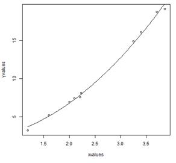

When modeling real world data for regression analysis, we observe that it is rarely the case that the equation of the model is a linear equation giving a linear graph. Most of the time, the equation of the model of real world data involves mathematical functions of higher degree like an exponent of 3 or a sin function. In such a scenario, the plot of the model gives a curve rather than a line. The goal of both linear and non-linear regression is to adjust the values of the model's parameters to find the line or curve that comes closest to your data. On finding these values we will be able to estimate the response variable with good accuracy.
In Least Square regression, we establish a regression model in which the sum of the squares of the vertical distances of different points from the regression curve is minimized. We generally start with a defined model and assume some values for the coefficients. We then apply the nls() function of R to get the more accurate values along with the confidence intervals.
Syntax
The basic syntax for creating a nonlinear least square test in R is –
nls(formula, data, start)
Following is the description of the parameters used −
1. formula is a nonlinear model formula including variables and parameters.
2. data is a data frame used to evaluate the variables in the formula.
3. start is a named list or named numeric vector of starting estimates.
Example
We will consider a nonlinear model with assumption of initial values of its coefficients. Next we will see what is the confidence intervals of these assumed values so that we can judge how well these values fir into the model.
So let's consider the below equation for this purpose –
a = b1*x^2+b2
Let's assume the initial coefficients to be 1 and 3 and fit these values into nls() function.
xvalues <- c(1.6,2.1,2,2.23,3.71,3.25,3.4,3.86,1.19,2.21)
yvalues <- c(5.19,7.43,6.94,8.11,18.75,14.88,16.06,19.12,3.21,7.58)
# Give the chart file a name.
png(file = "nls.png")
# Plot these values.
plot(xvalues,yvalues)
# Take the assumed values and fit into the model.
model <- nls(yvalues ~ b1*xvalues^2+b2,start = list(b1 = 1,b2 = 3))
# Plot the chart with new data by fitting it to a prediction from 100 data points.
new.data <- data.frame(xvalues = seq(min(xvalues),max(xvalues),len = 100))
lines(new.data$xvalues,predict(model,newdata = new.data))
# Save the file.
dev.off()
# Get the sum of the squared residuals.
print(sum(resid(model)^2))
# Get the confidence intervals on the chosen values of the coefficients.
print(confint(model))
When we execute the above code, it produces the following result −
[1] 1.081935
Waiting for profiling to be done...
2.5% 97.5%
b1 1.137708 1.253135
b2 1.497364 2.496484

We can conclude that the value of b1 is more close to 1 while the value of b2 is more close to 2 and not 3.